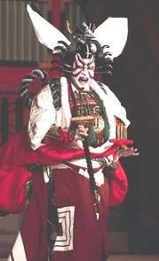
Herec japonského divadla kabuki
|
ORIENTÁLNÍ DIVADLO
Ve starověkém Řecku se divadlo zrodilo z náboženských oslav. Podobný původ mělo také orientální divadlo. Jako první náměty posloužily oblíbené mytologické příběhy, které každý divák dobře znal. To umožnilo tvůrcům orientálního divadla potlačit jeho obsahovou složku a soustředit se na formu, která si udržela svou nezaměnitelnou podobu až do dnešních časů. Orientální divadlo neprošlo tak bouřlivým vývojem jako divadlo evropské a řada odlišností z něj dělá pro Evropana nesrozumitelnou, ale zároveň exotickou podívanou. Základem orientálního divadla není civilní herectví, které jakoby napodobuje skutečnost. Herci zde naopak tančí a zpívají, někdy i vrhají přemety. Líčení i kostýmy září všemi barvami. Každý pohyb, každé gesto má přesný symbolický význam, kterému může porozumět pouze znalec. Snad by se dalo orientální divadlo přirovnat k cirkusovým vystoupením, ale to bychom herce i dramatiky pravděpodobně urazili.
|
Egypt a Mezopotámie
Ve starověku měly k divadlu nejblíže náboženské slavnosti. V Mezopotámii byly vynášeny sochy bohů z jejich chrámů a předváděly se mýty o sestupu bohyně Inanny do podsvětí nebo zmrtvýchvstání Dumuziho a Marduka. Formu dialogu má skladba Otrok a jeho pán. V Egyptě doprovázel nástup nového faraona obřad, který vycházel z mýtu o Usírovi (řecky Osiris). Dochoval se text skladby Nářek Ésety a Nebthety nad Usírem doplněný scénickými poznámkami.
|
Indie
Nejstarší indický dramatik, jehož díla známe, žil v 1. stol. n.l.
Indové byli velice důslední a veškeré znalosti zahrnovali do svých učebnic (šáster). Nejstarší učebnice divadelního umění se jmenuje Nátjašástra a podává nám ideální obraz indického divadla, který ovšem nebyl dramatiky vždy respektován. Základem her byl známý mytologický námět. Nehodnotila se novost zápletek, ale originalita zpracování. V divadelních hrách vystupovaly typické postavy jako nájaka (vždy kladný hlavní hrdina), vidúšaka (popleta) nebo šakára (šišlal), které mluvily daným nářečím (v každé hře se tedy kromě sanskrtu používala celá řada dalších jazyků). Herci měli v Indii velmi nízké společenské postavení. Podle teorie takzvané rasy (šťávy) bylo cílem představení dosáhnout konkrétního citového účinku na diváka (láska, veselost, smutek, hněv, statečnost, bázeň, odpor a údiv). Nejoblíbenější byla rasa milostná (láska) a hrdinská (statečnost).
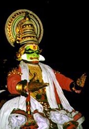
Kostým pro tanec kathakali
Jak na tebe působí ukázky z indických her? V čem se liší od evropského divadla?
|
Šúdraka: Hliněný vozíček
Šúdraka převzal námět po starším dramatikovi Bhásovi, který hru nestihl dokončit. Tato divadelní hra je v mnohém netypická. Obsahuje řadu odboček od hlavního děje, a dokonce i motiv státního převratu. V Hliněném vozíčku vystupují příslušníci nejnižších kast – hlavními postavami jsou milenci Čárudatta (zchudlý kupec) a Vasantaséná (nevěstka), o kterou usiluje zlý švagr krále. Ten se pokusí Vasantasénu zabít a následně obviní Čárudattu, že jí ukradl šperky a pak se jí zbavil. Čárudatta je odsouzen k trestu smrti, ale v poslední chvíli přijíždí Vasantaséná a vše se vysvětlí.
Co ses z této ukázky dozvěděl/a o indické společnosti?
Proč se hra jmenuje Hliněný vozíček?
Kálidása: Ztracený prsten
Šakuntala je krásná dívka, kterou vychovává poustevník. Při lovu ji spatří král Dušjanta, rázem se do ní zamiluje a ožení se s ní. Před odjezdem Šakuntale daruje prsten se svým jménem a slíbí, že pro ni brzy pošle svou družinu. Díky kletbě ale král na svou milou zapomene. Vzpomněl by si na ni jedině v tom případě, kdyby spatřil něco, co jí sám daroval. Šakuntala však upustí prsten do řeky. V břiše jedné z ryb ho objeví rybář a prsten se dostane až ke králi. Ten ale Šakuntalu nemůže nikde najít, protože si ji mezitím odnesla její matka – nebeská víla. Dušjanta se trápí, ale nakonec se s Šakuntalou šťastně shledá. Bohové mu ji vydali, protože jim pomohl při válce s démony.
|
Šúdraka (3. nebo 4. stol. n.l.)
Jméno Šúdraka napovídá, že se původně jednalo o příslušníka nejnižší kasty – šúdru. Je ovšem možné, že se nakonec stal králem, stejně jako pastýř Árjaka, který svrhl panovníka v jeho hře Hliněný vozíček.
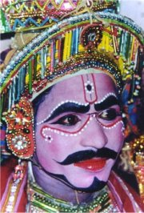
Nalíčený herec indického divadla
Kálidása (4. nebo 5. stol. n.l.)
Kálidása (toto jméno můžeme přeložit jako Otrok bohyně Kálí) byl autorem několika dramat, eposů i básní – Oblak poslem lásky. Jeho hru Poznávací znamení Šakuntalino přeložil do češtiny František Hrubín pod názvem Ztracený prsten.
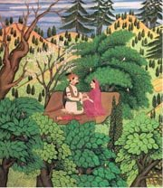
Dušjanta a Šakuntala
|
Čína
V Číně se začalo formovat profesionální divadlo za vlády dynastie Čou (1027-256 př.n.l.). Čínské divadlo je syntetické a zahrnuje akrobacii, pantomimu, zpěv, hudbu i tanec. Ve 14. stol. vznikly dvě základní dramatické formy. Ca-ťü (severní drama) bylo relativně strohé (zpívat mohla pouze hlavní postava). Věnoval se mu např. Kuan Chan-čching. Nan-si (jižní drama) vynikalo epičností, výpravností a délkou. Zpívat směly všechny důležité postavy. Na jižní drama navázalo v 16. stol. vzdělanecké divadlo kchun-čchü (čchuan-čchi). Šlo o rozsáhlé epické hry, ve kterých se mísily veršované, zpívané a prozaické pasáže. Každé dějství mělo svůj název a končilo čtyřverším, které shrnovalo jeho obsah. Tato dramata byla velmi náročná, protože obsahovala řadu citací a narážek na klasická literární díla. Psát je mohli pouze největší učenci a byla určena vzdělaným divákům. Ženské úlohy hráli muži. Od 19. stol. jeho postupy dovedly k dokonalosti tzv. hry z hlavního města známější pod označením pekingská opera.
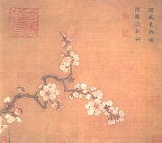
Ma Juan: Kvetoucí meruňka
|
Kchung Šang-žen: Vějíř s broskvovými květy
Rozsáhlé drama ve stylu čchuan-čchi Vějíř s broskvovými květy vypráví o lásce mezi kurtizánou Voničkou a vzdělaným mladíkem Chou Fang-jüem. Děj se odehrává v letech 1643 až 1684, kdy se čínská říše ocitla v krizi a dynastii Ming po vleklých bojích vystřídala Mandžuská dynastie. Vějíř je symbolem věčné lásky obou milenců. Při zásnubách na něj Chou Fang-jü napíše podle zvyku milostnou báseň. „Křivolaké uličky se vinou mezi domky bujně červenými. / Nápadníci v houfech sjíždějí se za kráskami svými. / Žádná z magnólií, které na břehu zelených říček zavoní, / se nevyrovná mé rozkvetlé švestce a broskvoni.“ Milence ale vzápětí rozdělí válka. Chou Fang-jü se stává vojákem a ocitne se ve vězení. Vonička se živí jako nevěstka. Kapky její krve, které skápnou na vějíř, přemaluje malíř na květy a doplní je o větvičky a lístky broskvoně. Nádherný vějíř posílá Vonička svému milému místo milostného dopisu. Po mnoha peripetiích se oba milenci krátce setkávají v Červánkových horách, ale každý vstupuje do jiného kláštera, protože doba válečného chaosu lásce nepřeje.
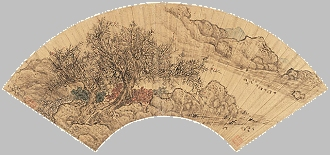
Chen Hungshou: Podzimní stromy u řeky (malba na vějíři)
|
Kchung Šan-žen (1648-1718)
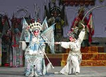
Scéna z pekingské opery
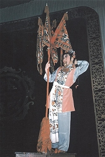
Rozkvetlý strom
Převyprávěj děj ukázky.
Jak se ti líbí veršované pasáže?
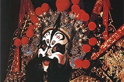
Maska z pekingské opery
|
Japonsko
Japonské divadlo bylo velmi ovlivněno čínským. V jeho počátcích stojí tradiční představení v maskách jako kagura (obřadní tanec), gigaku (buddhistická pantomima), bugaku (dvorský tanec), dengaku (lidové zábavy) nebo sarugaku (lidové divadlo).
Ve 14. stol. se z těchto forem vyvinulo profesionální dvorské divadlo nó (tj. umění), pro nějž je typické snoubení herectví, tance i hudby, využívání speciálních obličejových masek a silná stylizace. Hry se odehrávají před malbou staré borovice a pojednávají o setkání trýzněné duše (šite) s náhodným kolemjdoucím. Ustálené byly i náměty, které čerpaly látku ve známých příbězích o bozích, válečnících, ženách, nepříčetných a pomstě. Cílem představení bylo vyvolat „pocit přesahující slova“, tzv. júgen. Většinou se hrály čtyři různé kusy za sebou, přičemž tato vážná představení odlehčovaly improvizované komické mezihry zvané kjógen. V městském prostředí vzniklo loutkové divadlo džóruri (bunraku), které bylo určeno dospělým divákům. Kromě vodičů loutek zde vystupoval pouze jeden vypravěč, který zároveň mluvil za všechny postavy. V 16. stol. vzniklo měšťanské divadlo kabuki (tj. výstřední). Jeho náměty byly velmi pestré (historie, tragické příběhy, láska...). Tradiční masky nahradilo pestré líčení. Efektní byly i kostýmy. Původně hráli ženské postavy muži a mužské postavy ženy. V 17. stol. ale museli převzít všechny role mužští herci, protože šógun nejprve zakázal vystupování žen a vzápětí i mladých chlapců, kteří je měli nahradit. Sláva herců kabuki byla obrovská, o čemž svědčí výše jejich příjmů i řada dřevořezů ukijo-e, které je zachycují. V Japonsku existoval omezený počet hereckých rodů, jejichž příslušníci se mohli divadlu věnovat. Ostatní adepti hereckého umění museli být v útlém věku adoptováni.
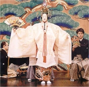
Scéna z divadla nó
Další oblasti
V Indonésii vzniklo velmi zajímavé stínové divadlo wayang, které se hrálo s plochými loutkami. V Tibetu se při svátcích žontön (velké jogurtové slavnosti) předvádí divadlo lhamo. Ve Vietnamu vynalezli vodní divadlo a v arabském světě divadlo kobercové.
|
Zeami Motokijo: Vítr v piniích
Klasická hra divadla nó Vítr v piniích pojednává o potulném mnichovi, jenž se zastavil u krásné borovice, aby se pomodlil za sestry Macukaze (Vítr v piniích) a Murasame (Náhlý déšť), které zde byly pohřbeny. V noci se mu zjeví jejich duše a vypravují mnichovi svůj příběh o nešťastné lásce k Jukihirovi.
Zeami (1363-1444) byl synem Kan’amiho, který roku 1374 vytvořil divadlo nó. Je považován za největšího japonského dramatika. Byl rovněž hercem a divadelním teoretikem (Kniha o tradici květu, Zrcadlo květu).
Čikamacu Monzaemon: Společná smrt v síti nebes na Amidžmě
Loutková hra divadla džóruri (bunraku) Společná smrt v síti nebes na Amidžmě se odehrává v Ósace a byla inspirována skutečnou událostí. Papírník Džihei se zamiloval do kurtizány Koharu, která mu slíbila lásku až za hrob. Papírníkova manželka Osan ale Koharu požádala, aby nerozbíjela jejich rodinu a vzdala se lásky k jejímu manželovi. Koharu souhlasí a Džiheie odvrhne. Nešťastný milenec se zase zřekne Koharu, která se připravuje na smrt, protože se o ni ucházejí další nápadníci. Nemůže porušit slib, který dala Džiheiovi, ani slib, který dala jeho manželce. Osan svého činu zalituje, vše říká manželovi, a dokonce mu dává peníze na vykoupení Koharu. Rozzlobený otec odvleče Osan z Džiheiova domu. Džihei Koharu vykoupí z nevěstince a oba milenci volí dobrovolnou smrt, protože nemohou dodržet své závazky.
Curuja Nanboku IV.: Podivný příběh z Jocuji
Výpravná hororová hra ve stylu divadla kabuki Podivný příběh z Jocuji sestává z 5 částí, první a poslední dějství se ale většinou nehrálo. Spletitý děj vypráví o osudech dvou sester a jejich manželů. Manžel Oiwy Iemon zavraždí jejího otce, který chce, aby se s ní rozvedl. O Iemona se uchází sousedova vnučka Oume. Sousedé pošlou Oiwě místo léku jed. Iemon nechá Oiwu přibít vedle svého sluhy na desku dveří a hodí je do řeky, jak se to dělá přistiženým cizoložníkům. Při svatební noci ale Iemon spatří místo Oume svou mrtvou ženu a ze strachu jí usekne hlavu... Iemonovi se mstí duch Oiwy doprovázený krysami. Zakousne jeho matku, dožene k sebevraždě jeho otce a nakonec se krysy sesypou i na Iemona. Manžel Oiwiny sestry Osode Jomošiči si vymění šaty se svým přítelem, aby mohl v přestrojení splnit tajné poslání. Vzápětí ale jeho přítele zavraždí Naosuke, který si myslí, že je to Jomošiči, o jehož manželku se uchází. Naosuke se ujme domněle ovdovělé Osode a slibuje pomstu vrahům jejího muže i otce… Po čase získá seznam spiklenců, o který přišel Jomošiči. Když ho Jomošiči vypátrá, vidí, že žije s jeho ženou. Naosuke zjišťuje, že místo Jomošičiho zavraždil svého bývalého pána. Navíc se dozvídá, že Osode byla jeho sestrou. Okamžitě jí utne hlavu a sám spáchá sebevraždu.
|
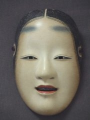
Maska z divadla nó
O čem pojednává tato ukázka?
Jak na tebe působí?
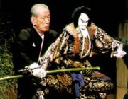
Vodič loutky v divadle bunraku
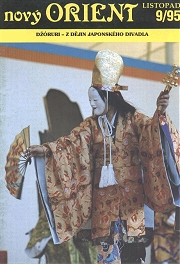
Herec divadla nó na obálce časopisu Nový Orient
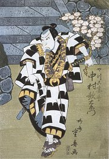
Rjúsai Šigeharu: Herec Nakamura Utaemon v roli
Tato hra je považována za parodii na příběhy o samurajích. Najdi v ní parodické prvky.
Zdá se ti, že je ukázka hororová? Proč?
Srovnej děj hry Podivný příběh z Jocuji s dramatem Vítr v piniích.
|
Internetové stránky
Theatre history, asijské divadlo
Kabuki, japonské divadlo
Nó, japonské divadlo
Kathakali, indický tanec
Indické tanečnice, fotografie
Wayang, indonéské stínové divadlo
Pekingská opera, čínské divadlo
Vodní divadlo, Vietnam
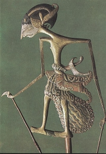
Loutka z indonéského stínového divadla wayang
|
Doporučená literatura
Divadelné kultúry Východu, Bratislava 1987
Dvě japonská dramata (Terakoya, Asagao)
Hilská, Vlasta: Japonské divadlo, Praha 1947
Kalhoty pro dva, Antologie tradičního japonského divadla, Brody, Praha
Kálidása: Oblak poslem lásky, přel. O.Friš, Praha 1954
Kálidása: Ztracený prsten, přel. F.Hrubín, SNKLU, Praha 1961
Kalvodová, Dana: Asijské divadlo na konci milénia, Academia, Praha 2003
Kalvodová, D.: Čínské divadlo, Praha 1992
Kalvodová, D., Novák, M.: Vítr v piniích, Odeon, Praha 1975 (japonské divadlo)
Kchung Šang-žen: Vějíř s broskvovými květy, přel. D.Kalvodová, Odeon, Praha 1968
Kopecký J.: Síň obou pravd, Praha 1989 (hra o Osiridovi)
Kuan Chan-čching: Letní sníh a jiné hry, přel. D.Kalvodová, Odeon, Praha 1960
Lexová, I.: O staroegyptském tanci, Praha 1930
Matoušová-Rajmová, Marie: Tanec v Mezopotámii, AMU, Praha 2002
Nový Orient (časopis)
Průšek, J.: O čínském písemnictví a vzdělanosti, Praha 1947
Průšek, J. a kol: Slovník spisovatelů Asie a Afriky (2 svazky), Praha 1967
Svět loutek, Kruh, Hradec Králové 1978
Šúdraka: Hliněný vozíček, přel. I.Fišer, J.Pokorný, Praha 1959
Zbavitel, Kalvodová: Pod praporem krále nebes, Divadlo v Indii, Odeon, Praha 1987 (Kálidása: Vikrama a Urvaší, Bódhájana: Asketa a kurtizána)
|
Připrav si referát o některé z uvedených knih nebo internetových stránek.
Srovnej orientální divadlo a drama s antickým, komedií dell’arte nebo avantgardním divadelnictvím.
Sehrajte divadelní představení v orientálním stylu. Můžete vytvořit loutky pro stínové divadlo nebo využít masky a pestrobarevné líčení.
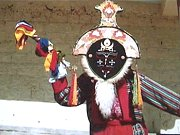
Herec tibetského divadla lhamo
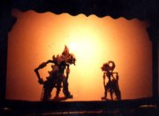
Indonéské stínové divadlo wayang
|
|